pandas快速入门
学习目标
- 能够知道 DataFrame 和 Series 数据结构
- 能够加载 csv 和 tsv 数据集
- 能够区分 DataFrame 的行列标签和行列位置编号
- 能够获取 DataFrame 指定行列的数据
1. DataFrame 和 Series 简介
pandas是用于数据分析的开源Python库，可以实现数据加载，清洗，转换，统计处理，可视化等功能。
pandas最基本的两种数据结构：
1）DataFrame
- 用来处理结构化数据（SQL数据表，Excel表格）
- 可以简单理解为一张数据表(带有行标签和列标签)
2）Series
- 用来处理单列数据，也可以以把DataFrame看作由Series对象组成的字典或集合
- 可以简单理解为数据表的一行或一列
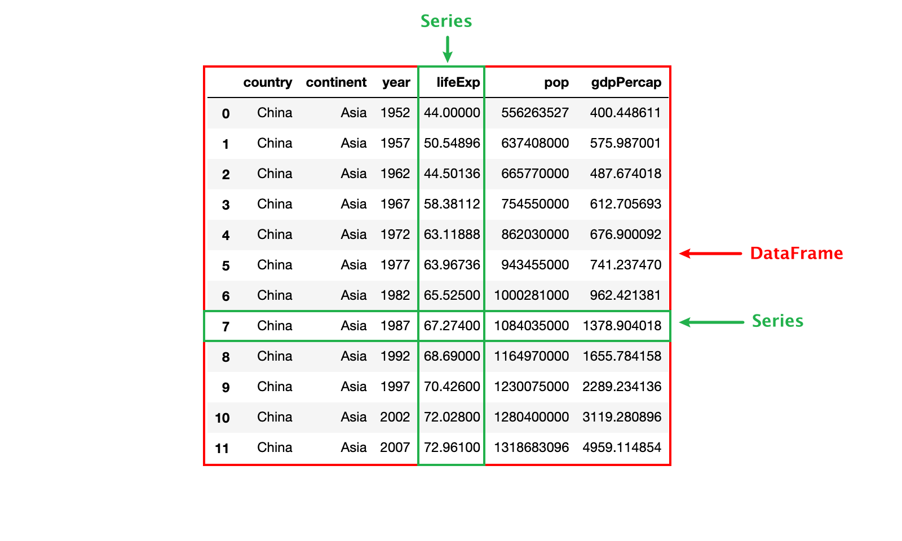
2. 加载数据集(csv和tsv)
2.1 csv和tsv文件格式简介
csv 和 tsv 文件都是存储一个二维表数据的文件类型。
注意：其中csv文件每一列的列元素之间以逗号进行分割，tsv文件每一行的列元素之间以\t进行分割。
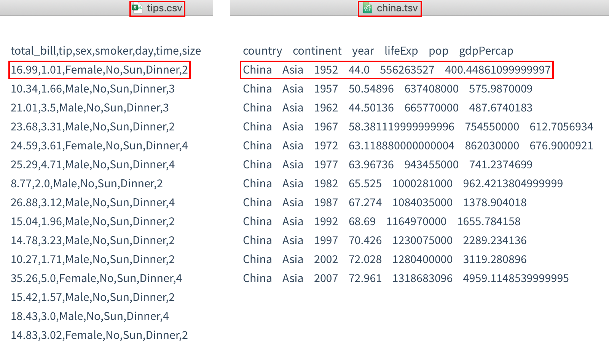
2.2 加载数据集(tsv和csv)
1）首先打开jupyter notebook，进入自己准备编写代码目录下方，创建01-pandas快速入门.ipynb文件：
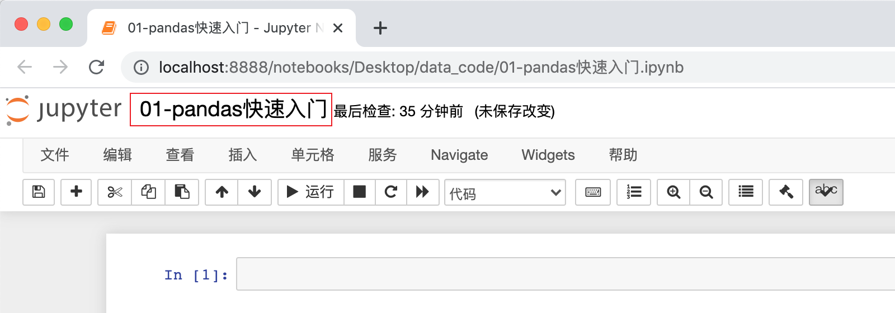
注意：提前将提供的 data 数据集目录放置到 01-pandas快速入门.ipynb 同级目录下，后续课程会加载 data 目录下的数据集。
2）导入 pandas 包
注意：pandas 并不是 Python 标准库，所以先导入pandas
# 在 ipynb 文件中导入 pandas
import pandas as pd
3）加载 csv 文件数据集
tips = pd.read_csv('./data/tips.csv')
tips
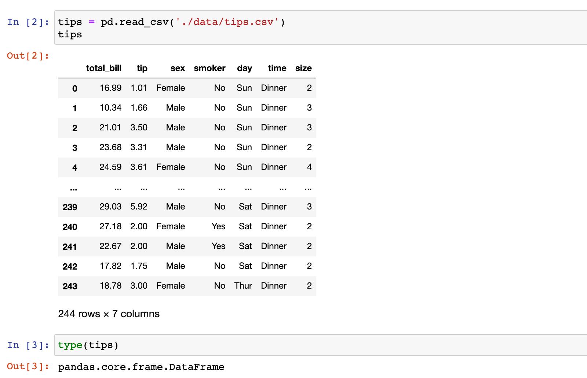
4）加载 tsv 文件数据集
# sep参数指定tsv文件的列元素分隔符为\t，默认sep参数是,
china = pd.read_csv('./data/china.tsv', sep='\t')
china
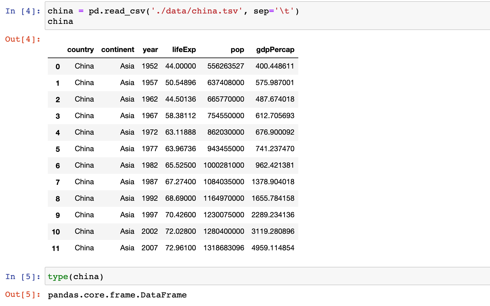
3. DataFrame 的行列标签和行列位置编号
3.1 DataFrame 的行标签和列标签
1）如果所示，分别是 DataFrame 的行标签和列标签
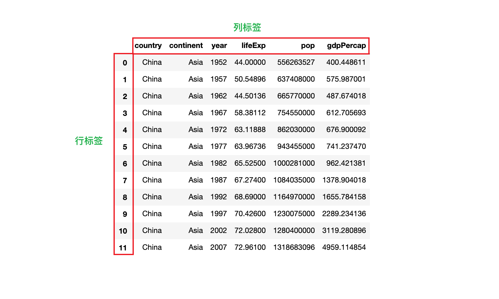
2）获取 DataFrame 的行标签
# 获取 DataFrame 的行标签
china.index
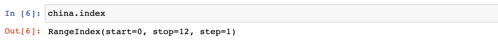
3）获取 DataFrame 的列标签
# 获取 DataFrame 的列标签
china.columns
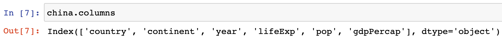
4）设置 DataFrame 的行标签
# 注意：DataFrame设置行标签时，并不会改变原来的DataFrame，而是返回的副本
china_df = china.set_index('year')
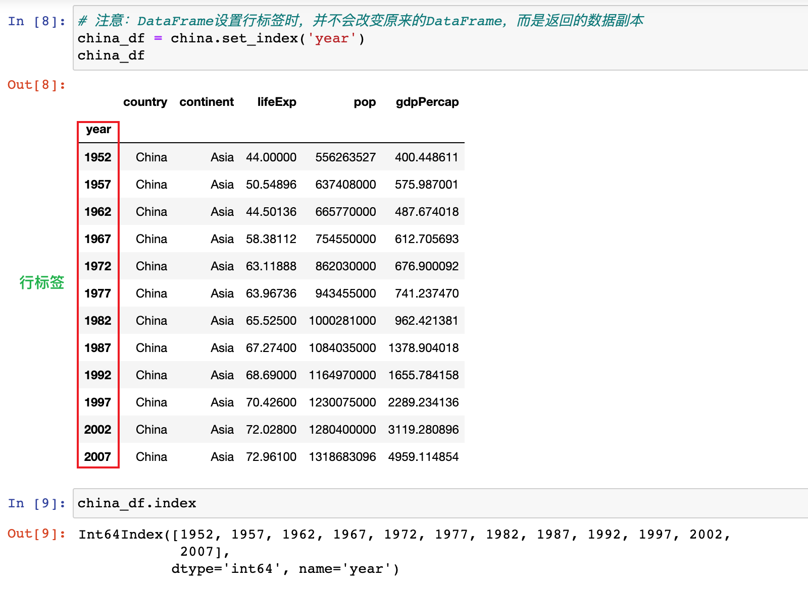
3.2 DataFrame 的行位置编号和列位置编号
DataFrame 除了行标签和列标签之外，还具有行列位置编号。
行位置编号：从上到下，第1行编号为0，第二行编号为1，…，第n行编号为n-1
列位置编号：从左到右，第1列编号为0，第二列编号为1，…，第n列编号为n-1
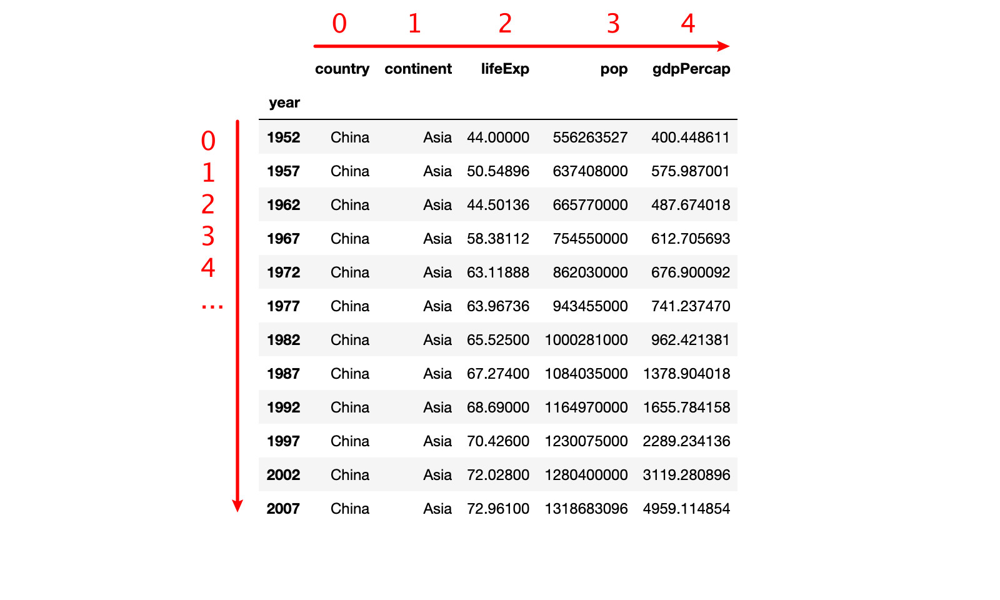
注意：默认情况下，行标签和行位置编号是一样的。
4. DataFrame 获取指定行列的数据
以下示例都使用加载的 gapminder.tsv 数据集进行操作，注意将 year 这一列设置为行标签。
4.1 loc函数获取指定行列的数据
基本格式：
| 语法 | 说明 |
|---|---|
df.loc[[行标签1, ...], [列标签1, ...]] |
根据行标签和列标签获取对应行的对应 列的数据，结果为：DataFrame |
df.loc[[行标签1, ...]] |
根据行标签获取对应行的所有列的数据 结果为：DataFrame |
df.loc[:, [列标签1, ...]] |
根据列标签获取所有行的对应列的数据 结果为：DataFrame |
df.loc[行标签] |
1）如果结果只有一行，结果为：Series 2）如果结果有多行，结果为：DataFrame |
df.loc[[行标签]] |
无论结果是一行还是多行，结果为DataFrame |
df.loc[[行标签], 列标签] |
1）如果结果只有一列，结果为：Series， 行标签作为 Series 的索引标签 2）如果结果有多列，结果为：DataFrame |
df.loc[行标签, [列标签]] |
1）如果结果只有一行，结果为：Series， 列标签作为 Series 的索引标签 2）如果结果有多行，结果为DataFrame |
df.loc[行标签, 列标签] |
1）如果结果只有一行一列，结果为单个值 2）如果结果有多行一列，结果为：Series， 行标签作为 Series 的索引标签 3）如果结果有一行多列，结果为：Series， 列标签作为 Series 的索引标签 4）如果结果有多行多列，结果为：DataFrame |
演示示例：
示例1：获取行标签为 1952, 1962, 1972 行的 country、pop、gdpPercap 列的数据
示例2：获取行标签为 1952, 1962, 1972 行的所有列的数据
示例3：获取所有行的 country、pop、gdpPercap 列的数据
示例4：获取行标签为 1957 行的所有列的数据
示例5：获取行标签为 1957 行的 lifeExp 列的数据
示例实现：
1）示例1：获取行标签为 1952, 1962, 1972 行的 country、pop、gdpPercap 列的数据
# 示例1：获取行标签为 1952, 1962, 1972 行的 country、pop、gdpPercap 列的数据
china_df.loc[[1952, 1962, 1972], ['country', 'pop', 'gdpPercap']]
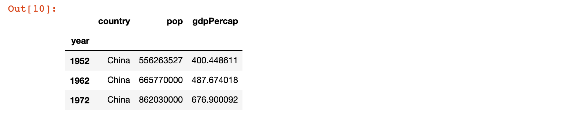
2）示例2：获取行标签为 1952, 1962, 1972 行的所有列的数据
# 示例2：获取行标签为 1952, 1962, 1972 行的所有列的数据
china_df.loc[[1952, 1962, 1972]]
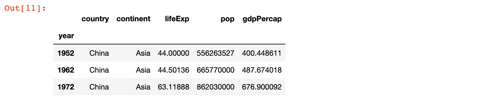
3）示例3：获取所有行的 country、pop、gdpPercap 列的数据
# 示例3：获取所有行的 country、pop、gdpPercap 列的数据
china_df.loc[:, ['country', 'pop', 'gdpPercap']]
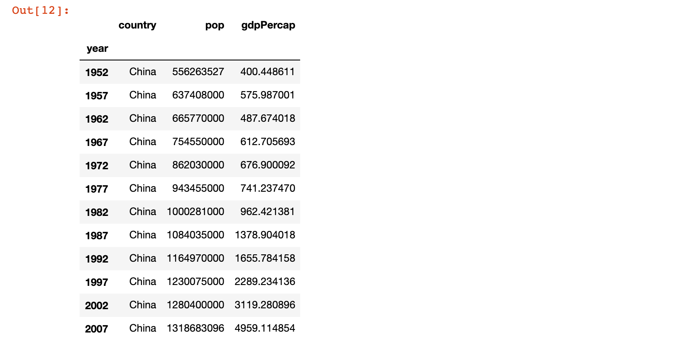
4）示例4：获取行标签为 1957 行的所有列的数据
# 示例4：获取行标签为 1957 行的所有列的数据
china_df.loc[1957]

# 示例4：获取行标签为 1957 行的所有列的数据
china_df.loc[[1957]]
5）示例5：获取行标签为 1957 行的 lifeExp 列的数据
# 示例5：获取行标签为 1957 行的 lifeExp 列的数据
china_df.loc[[1957], 'lifeExp']
或
china_df.loc[1957, ['lifeExp']]
或
china_df.loc[1957, 'lifeExp']
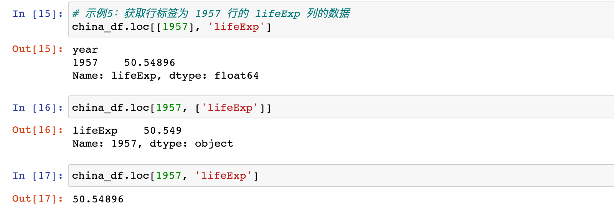
4.2 iloc函数获取指定行列的数据
基本格式：
| 语法 | 说明 |
|---|---|
df.iloc[[行位置1, ...], [列位置1, ...]] |
根据行位置和列位置获取对应行的对应 列的数据，结果为：DataFrame |
df.iloc[[行位置1, ...]] |
根据行位置获取对应行的所有列的数据 结果为：DataFrame |
df.iloc[:, [列位置1, ...]] |
根据列位置获取所有行的对应列的数据 结果为：DataFrame |
df.iloc[行位置] |
结果只有一行，结果为：Series |
df.iloc[[行位置]] |
结果只有一行，结果为：DataFrame |
df.iloc[[行位置], 列位置] |
结果只有一行一列，结果为：Series， 行标签作为 Series 的索引标签 |
df.iloc[行位置, [行位置]] |
结果只有一行一列，结果为：Series， 列标签作为 Series 的索引标签 |
df.iloc[行位置, 行位置] |
结果只有一行一列，结果为单个值 |
演示示例：
示例1：获取行位置为 0, 2, 4 行的 0、1、2 列的数据
示例2：获取行位置为 0, 2, 4 行的所有列的数据
示例3：获取所有行的列位置为 0、1、2 列的数据
示例4：获取行位置为 1 行的所有列的数据
示例5：获取行位置为 1 行的列位置为 2 列的数据
示例实现：
1）示例1：获取行位置为 0, 2, 4 行的 0、1、2 列的数据
# 示例1：获取行位置为 0, 2, 4 行的 0、1、2 列的数据
china_df.iloc[[0, 2, 4], [0, 1, 2]]
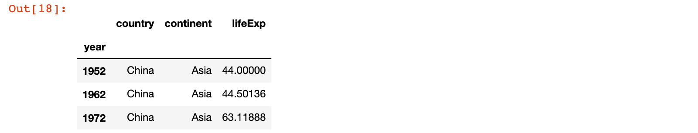
2）示例2：获取行位置为 0, 2, 4 行的所有列的数据
# 示例2：获取行位置为 0, 2, 4 行的所有列的数据
china_df.iloc[[0, 2, 4]]
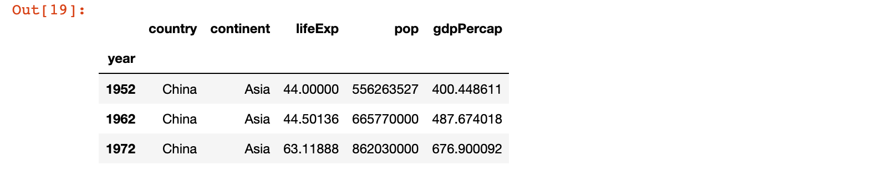
3）示例3：获取所有行的列位置为 0、1、2 列的数据
# 示例3：获取所有行的列位置为 0、1、2 列的数据
china_df.iloc[:, [0, 1, 2]]
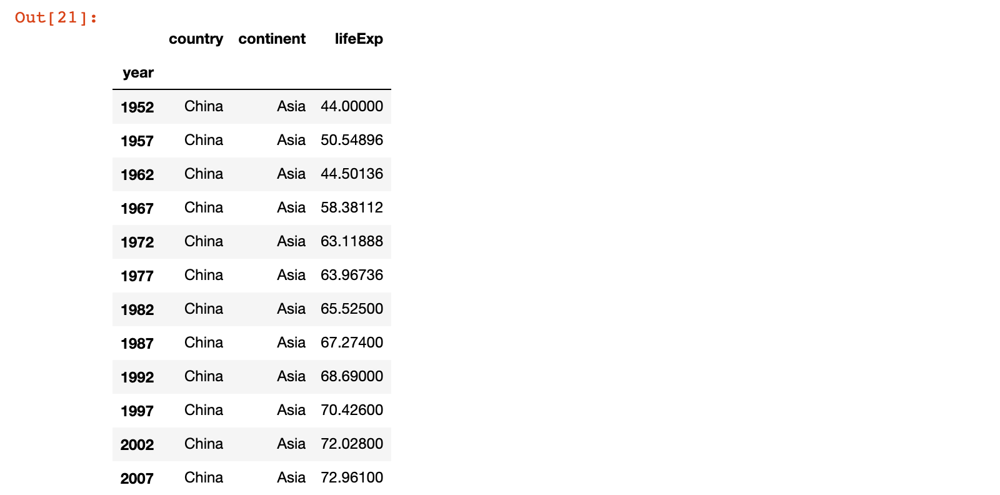
4）示例4：获取行位置为 1 行的所有列的数据
# 示例4：获取行位置为 1 行的所有列的数据
china_df.iloc[1]
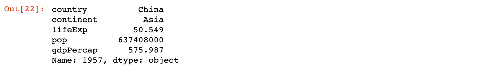
# 示例4：获取行位置为 1 行的所有列的数据
china_df.iloc[[1]]
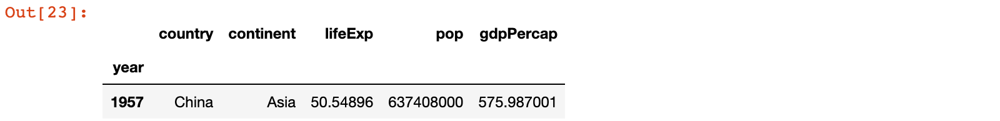
5）示例5：获取行位置为 1 行的列位置为 2 列的数据
# 示例5：获取行位置为 1 行的列位置为 2 列的数据
china_df.iloc[[1], 2]
或
china_df.iloc[1, [2]]
或
china_df.iloc[1, 2]
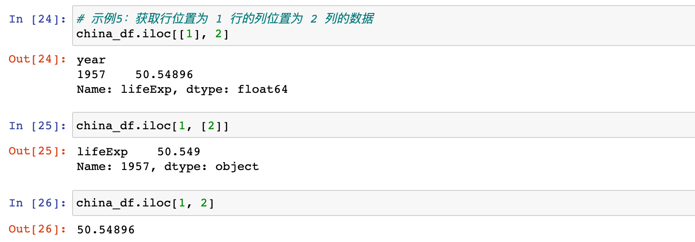
4.3 loc和iloc的切片操作
基本格式：
| 语法 | 说明 |
|---|---|
df.loc[起始行标签:结束行标签, 起始列标签:结束列标签] |
根据行列标签范围获对应行的对应列的数据，包含起始行列标签和结束行列标签 |
df.iloc[起始行位置:结束行位置, 起始列位置:结束列位置] |
根据行列标签位置获对应行的对应列的数据，包含起始行列位置，但不包含结束行列位置 |
演示示例：
示例1：获取 china_df 中前三行的前三列的数据，分别使用上面介绍的loc和iloc实现
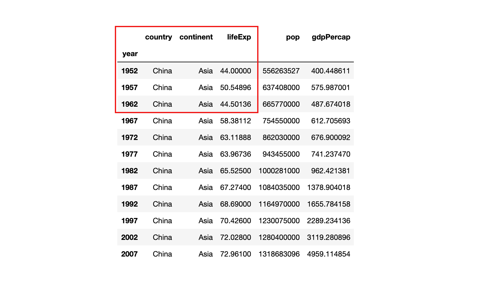
示例实现：
1）示例1：获取 china_df 中前三行的前三列的数据，分别使用上面介绍的loc和iloc实现
# 示例1：获取 china_df 中前三行的前三列的数据，分别使用上面介绍的loc和iloc实现
china_df.loc[1952:1962, 'country':'lifeExp']
或
china_df.iloc[0:3, 0:3]
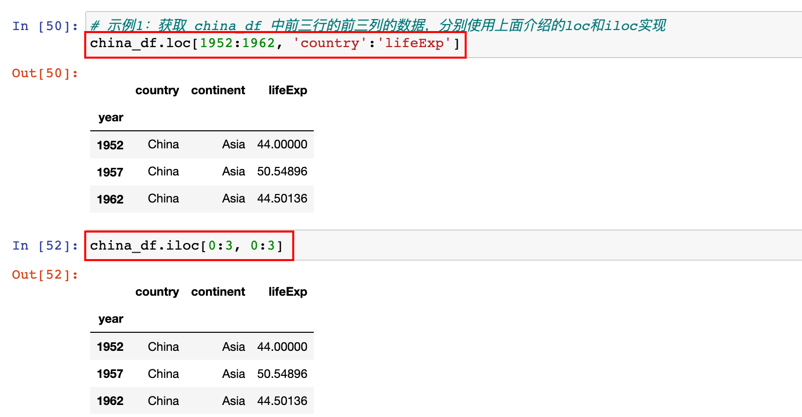
4.4 [] 语法获取指定行列的数据
基本格式：
| 语法 | 说明 |
|---|---|
df[['列标签1', '列标签2', ...]] |
根据列标签获取所有行的对应列的数据，结果为：DataFrame |
df['列标签'] |
根据列标签获取所有行的对应列的数据 1）如果结果只有一列，结果为：Series， 行标签作为 Series 的索引标签 2）如果结果有多列，结果为：DataFrame |
df[['列标签']] |
根据列标签获取所有行的对应列的数据，结果为：DataFrame |
df[起始行位置:结束行位置] |
根据指定范围获取对应行的所有列的数据，不包括结束行位置 |
演示示例：
示例1：获取所有行的 country、pop、gdpPercap 列的数据
示例2：获取所有行的 pop 列的数据
示例3：获取前三行的数据
示例4：从第一行开始，每隔一行获取一行数据，一共获取3行
示例实现：
1）示例1：获取所有行的 country、pop、gdpPercap 列的数据
# 示例1：获取所有行的 country、pop、gdpPercap 列的数据
china_df[['country', 'pop', 'gdpPercap']]
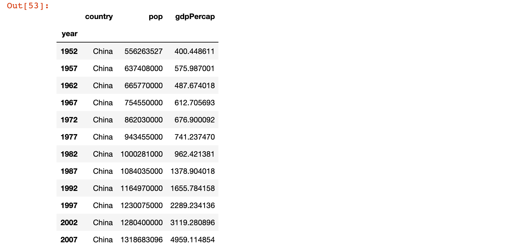
2）示例2：获取所有行的 pop 列的数据
# 示例2：获取所有行的 pop 列的数据
china_df['pop']
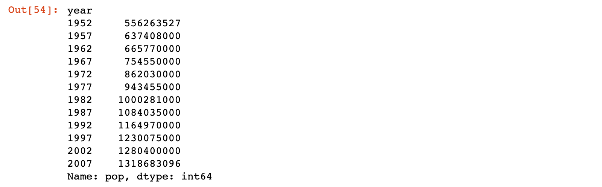
# 示例2：获取所有行的 pop 列的数据
china_df[['pop']]
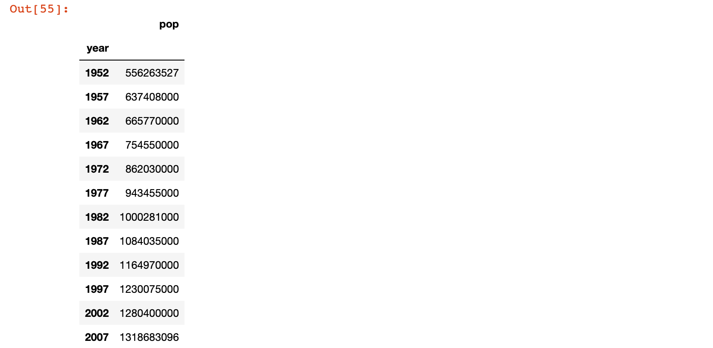
3）示例3：获取前三行的数据
# 示例3：获取前三行的数据
china_df[0:3]
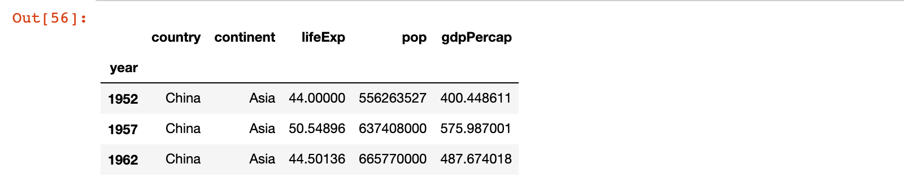
4）示例4：从第一行开始，每隔一行获取一行数据，一共获取3行
# 示例4：从第一行开始，每隔一行获取一行数据，一共获取3行
china_df[0:6:2]
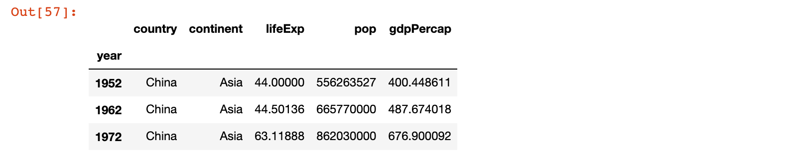
总结
- 能够知道 DataFrame 和 Series 数据结构
- 能够加载 csv 和 tsv 数据集
- 能够区分 DataFrame 的行列标签和行列位置编号
- 能够获取 DataFrame 指定行列的数据
- loc
- iloc
- loc和iloc的切片操作
- []